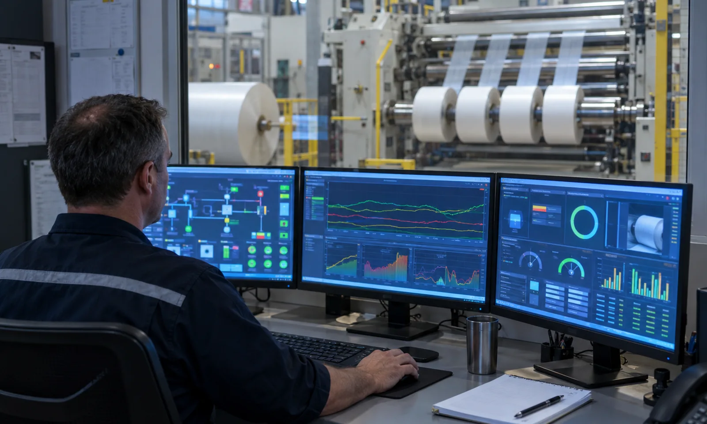

Published September 20, 2026 | By HDPTH Technical Editorial Team

Machine suppliers quote cutting accuracy and speed; plant managers are measured on traceability, yield and utilisation. The gap between those two worlds is where most data projects fail. A slitter rewinder generates plenty of information by default — encoder counts, drive torque, tension, alarm states — but almost none of it is what a business system needs. Buyers who leave the interface until after installation discover that the machine can report servo temperature but not how many saleable metres came off each parent roll.
Three streams, not one
The practical way to structure the requirement is to separate what the machine must produce into three streams with different consumers:
- Batch transaction stream for ERP: order number, product code, parent roll and material batch consumed, slit widths, roll count with length or weight each, scrap and trim, operator and shift, start and end time. This closes the order and updates inventory.
- State and event stream for OEE: every machine state change with a timestamp — running, idle, changeover, fault, waiting for material, maintenance — plus the speed at which the machine was actually running. This is the only basis for a defensible availability and performance figure.
- Quality and alarm stream for traceability: inspection events, defect locations, tension excursions, splices and any quality hold, linked to roll number so a suspect length can be identified later. See inspection and data capture.
Where the data should go
ERP systems are transaction systems: they want a completed order, a consumed quantity and a produced quantity, not a continuous stream of machine states. An MES or plant data layer sits between the two, collecting machine events, applying the plant’s definitions of downtime, scrap and good product, and handing ERP clean transactions. This separation also protects the line — if the slitter writes directly into ERP and the ERP is unavailable, production stops or data is lost; with an intermediate layer the machine keeps running and the buffer catches up. It is the same argument as putting an accumulation conveyor between the rewinder and the wrapper in downstream integration.
| Interface option | Best use | What to watch for |
|---|---|---|
| OPC UA | Structured machine data and events to MES or SCADA | Confirm the companion information model and tag list, not just “OPC UA available” |
| MQTT | Lightweight event publishing, remote monitoring, edge gateways | Define topic structure, payload schema and quality of service |
| Modbus TCP | Simple numeric values where no structure is needed | No naming, units or security standard — mapping is custom work every time |
| REST API | Request or response transactions with business systems | Authentication, rate limits and behaviour when the endpoint is down |
| CSV or XML file drop | Fallback where nothing else is possible | Data sits on the machine, parsing is fragile, timestamps are often local only |
| Printed or typed records | Nothing | Manual entry reintroduces exactly the errors automation removes |
Making OEE figures defensible
OEE is where data projects lose credibility fastest, because two systems rarely produce the same number. The cause is almost never arithmetic; it is undefined states. Is waiting for a forklift a downtime event? Is changeover planned time? If the machine runs at 70 percent of nominal speed by operator choice, is that performance loss? Write the answers into the specification and require the machine to record raw state transitions with timestamps rather than a computed percentage, so the number can be recalculated when definitions change and audited when disputed. This extends recipe management and line data and the downtime categories in our OEE and downtime data guide.
Specifying the integration in the contract
Write the interface as an annex, not a sentence: name the protocol and version, list the tags with engineering units and data types, state the sampling behaviour, local retention and what happens when the connection is lost, and name a responsible person on each side. Require an end-to-end demonstration at acceptance: run a short real order, confirm the batch record arrives with correct quantities, and confirm a deliberate fault appears in the state history with the correct timestamp. Treat this as you would factory acceptance testing of the mechanical sections, and keep the interface documentation in the same technical file as the CE documentation.
Planning a connected converting line?
Send HDPTH your order structure, ERP or MES platform, required batch fields and OEE definitions. We will specify the tag list and protocol and demonstrate the interface end to end before shipment.
Submit Your Project InquiryQuestions to put to every supplier
- Which protocol and version is supported, and is the full tag list documented with units?
- What exactly is recorded for each machine state change, and at what resolution?
- What happens to data if the network connection to ERP is lost for an hour?
- How long does the machine retain batch and event history locally?
- Can we demonstrate a real order end to end at factory acceptance?
- What remote access exists, who authorises it, and can the plant disable it?
Refining the rest of the specification?
Continue with our guides to remote diagnostics and IIoT, production capacity planning and short-run changeover.
Contact HDPTHFrequently asked questions
What data should a slitter rewinder send to ERP?
ERP needs transaction data, not machine signals: order number, product code, material batch consumed, slit widths produced, roll count with length or weight per roll, scrap and trim quantity, operator and shift, and start and end timestamps. Every field should be generated automatically from the machine’s order record. If an operator has to type any of it, the integration has failed — manual entry is where traceability errors enter.
Should the machine connect directly to ERP or through an MES layer?
Through an intermediate MES or plant data layer in almost every case. Direct machine-to-ERP coupling makes both sides brittle: a machine firmware change can break a financial transaction, and an ERP upgrade can stop the line. An intermediate layer collects machine events, applies the plant’s business definitions of downtime and scrap, and forwards clean transactions. It also lets you add a second machine later without renegotiating the ERP interface.
Which protocol should I require — OPC UA, MQTT, Modbus TCP or file exchange?
Require OPC UA or MQTT for machine data and events, because both carry structure, units and timestamps rather than bare register values. Modbus TCP is acceptable for simple values but gives you no tag naming standard, no units and no security model, so every integration becomes a custom mapping job. Flat file exchange in CSV or XML is the weakest option and should be a fallback only: it stores data on the machine where it can be lost and forces the receiving system to poll and parse. Specify the protocol in the purchase contract, along with the tag list.
How do we get OEE figures that are actually trustworthy?
Agree the definitions before the machine is built, not after the first monthly report. Write down what counts as planned versus unplanned downtime, whether changeover is planned, whether speed losses count as performance loss, and how a partly good roll is counted. Then require the machine to record the underlying states and timestamps rather than a single OEE percentage, so the number can be recalculated when definitions change. A machine that only reports one percentage gives you a figure nobody can audit.
What should be agreed about data ownership, access and security?
Agree four things in writing: who owns the production data, what the supplier may collect for remote service, whether remote access requires per-visit approval, and how the machine is segmented from the corporate network. Production data belongs to the plant. Remote service access should be authenticated, logged, and disableable by the plant at any time. Any connection reaching the machine belongs in the technical file, because an undocumented network path is a security and often a compliance problem.
Sources
- ISA: ISA-95 and ISA-88 standards for enterprise-control system integration
- OPC Foundation: OPC UA specifications and companion information models
- MQTT: the standard messaging transport for industrial IoT
- NIST Cybersecurity Framework: guidance for industrial control systems
- ISO 9001: quality management systems and record keeping